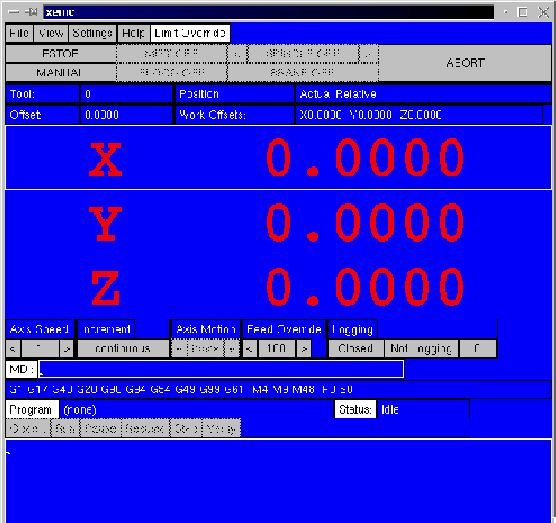
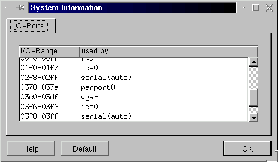
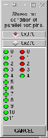
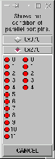

My system
Tigerdirect cheapo tower and board - S3 chipset.
Cyrix pr300 - 233 actual
64M ram memory
Mandrake 7.0
Rtlinux-2.0 prepatched (how is a subject that I am writing for handbook)
emc-05-May-2000.tgz download and install (a problem with emcsh compile)Email me for my work arounds on these.
Throughout this page I will use dark green letters to indicate the lines of text that I entered into the console (konsole). I will use dark red to indicate the response of the computer to my command. Medium red lines are the focus on the discussion. For the sake of brevity, I have edited many of the responses of the computer when it was asked to compile large numbers of files. Some of these lengthy responses are included as files and are linked to this document so that you can compare your results.
So far, I have loaded Mandrake 7.0 on my clean hard drive. I have built a real time kernel, and I have successfully installed EMC. Now I am ready to try running EMC. So I enter the following two lines.
[root@localhost /root]# cd
/usr/local/nist/emc
[root@localhost emc]# ./emc.run
Current platform is linux_2_2_13
Current real-time platform is rtlinux_2_0
inivar = plat/linux_2_2_13/bin/inivar
INIFILE = emc.ini
starting emc...
starting steppermod.o...plat/rtlinux_2_0/lib/steppermod.o: invalid
parameter PERIOD can't install it
That's just a little disappointing but I learned several things. The startup file found my realtime and nonrealtime directories and made links to them. It found and is using emc.ini. It tried to start emc using steppermod.o. But it had a problem with a parameter (variable) named PERIOD so it quit.
Looking down in the emc.ini file, I find:
; Base task period, in seconds
PERIOD = 0.000016
From experience I know that steppermod will not run with period defined in the ini file. I have two choices, change the steppermod.o to freqmod.o or remove the period variable. For this try I'm going to keep steppermod.o because It won't make my computer work quite as hard. So I comment out period in emc.ini and save the file. Comment is a ; at the start of a line. (I have since found a bug in the compile of steppermod.o from the June 2000 release that does some goofy stuff to the ini file when you shut down EMC)
; Base task period, in seconds
; PERIOD = 0.000016
|
I return to the console and press the up arrow and get:
[root@localhost emc]# ./emc.run
|
|

|
Now I see xemc with huge red letters. When I try to bring it out of estop it won't. I press file and slide down to quit and release the mouse button. A dialog pops up quit? Yes! And xemc and EMC go away.
Won't come out of estop. 'eh. Well what are the possibilities here. (look in emc.ini) The major sections are labeled:
1. EMC
2. DISPLAY
3. TASK
4. RS274NGC
5. EMCMOT
6. TRAJ
7. AXIS_0
8. AXIS_1
9. AXIS_2
10. EMCIO
11. EMCSERVER
12. EMCSTRIP
Now the huge red letters are a clue. They say that the axis limit switches are tripped. But I don't have any axis limits hooked up! Well what's happening here is that EMC is looking at the pins that the ini says are the limits and those pins are defined in the ini as being tripped.
Let's start by looking in the EMCMOT section for answers. (We did that for the period problem already.)
[EMCMOT]
; Platform for motion
PLAT = realtime
; PLAT = nonrealtime Yes we want realtime motion so
that's good.
; Name of motion control program
EMCMOT = steppermod.o
; EMCMOT = freqmod.o
; EMCMOT = stgmod.o
; EMCMOT = stg8mod.o
; EMCMOT = emcmotsim
We already know that it's trying to run steppermod.o. Steppermod and freqmod both use the parallel port(s) for their signals so let's look at what we have defined for the parallel port here with motion.
; Address for parallel port used for steppers
IO_BASE_ADDRESS = 0x378
Now I want to know if that is the address that my machine's parallel port is registered to so I look in the Kmenu under settings / information / I/O port information / in the popup menus for Mandrake 7. Yours may be different! [ part2/images/sysinfo.gif]

Setting up Stepper Motors (from the nist page)
Currently the EMC supports stepper motors with a 2-bit step-and-direction interface, with bits mapped to the parallel port. Each parallel port has 12 bits of output and 5 bits of input. The outputs are used to drive the step and direction of each motor. 12 bits of output mean that up to 6 stepper motors can be controlled. The inputs can be used to detect limit or home switch trips. 5 bits of input mean that only one axes can get full positive, negative,and home switch inputs. The EMC mapping compromises for 3 axes of stepper motor control, with all positive limit switches being mapped to one input, all negative limit switches being mapped to another input, and all home switches being mapped to a third input. Other permutations are possible, of course, and can be changed in the software. You could also add 2 additional parallel ports (LPT2, LPT3), and get 36 bits of output and 15 bits of input. Some parallel ports also let you take 4 outputs and use them as inputs, for 8 outputs and 9 inputs for each parallel port. This would let you get 3 axes of control and full switch input per parallel port.
The pin-out for the EMC stepper motor interface is as follows:
Output Parallel Port
--- -------
X direction D0, pin 2
X clock D1, pin 3
Y direction D2, pin 4
Y clock D3, pin 5
Z direction D4, pin 6
Z clock D5, pin 7
Input Parallel Port
--- -------
X/Y/Z lim + S3, pin 15
X/Y/Z lim - S4, pin 13
X/Y/Z home S5, pin 12
|
Stepper motor control is implemented using a second real-time task
that runs at 100 microseconds. This task writes the parallel port
output with bits set or cleared based on whether the pulse should
be raised or lowered. This gives an effective period of 200 microseconds
for a full up-and-down pulse, or a frequency limited to about 5 kilohertz.
Well now I know that EMC is looking for all of the + limits on pin 15 - signal S3, the - limits on pin 13 - S4, and the home signals on pin 12 - S5. So what's happening at that parport address. Well there are several ways to find out. The one that I like personally is a little Tcl/Tk script that is included in EMC. It's called IO_Show.tcl. The direction signals are easy to see but the stepper clock pulses only show once in a while.
|
|

|
You can use this from the scripts menu in tkemc, while emc is running and see some of what's happening. You may also run it from a terminal and see what the pins are doing. In a new console window enter:
[root@localhost ray]# cd
/usr/local/emc
[root@localhost emc]# scripts/IO_Show.tcl
The left column of pins are the D signals. The right column are the S signals. The right hand column begins with S3 so the first led shows that signal S3 is high.
Now I know that the EMC thinks that switches are closed to the limits and the home pins because the signals are high. Now I'm ready to look in the ini file again. This time I'm going to look in each of the axis sections because it is there that the state of the individual signals are set.
; First axis
[AXIS_0]
TYPE = LINEAR
UNITS = 0.03937007874016
HOME = 0.000
MAX_VELOCITY = 1.2
P = 1000.000
I = 0.000
D = 0.000
FF0 = 0.000
FF1 = 0.000
FF2 = 0.000
BACKLASH = 0.000
BIAS = 0.000
MAX_ERROR = 0.000
DEADBAND = 0.000
CYCLE_TIME = 0.001000
INPUT_SCALE = 1000 0
OUTPUT_SCALE = 1.000 0.000
MIN_LIMIT = -10.0
MAX_LIMIT = 10.0
MIN_OUTPUT = -10
MAX_OUTPUT = 10
FERROR = 1.000
MIN_FERROR = 0.010
HOMING_VEL = 0.1
HOME_OFFSET = 0.0
ENABLE_POLARITY = 0
MIN_LIMIT_SWITCH_POLARITY = 1
MAX_LIMIT_SWITCH_POLARITY = 1
HOME_SWITCH_POLARITY = 1
HOMING_POLARITY = 1
JOGGING_POLARITY = 1
FAULT_POLARITY = 1
; Parameters for Inland Motor BMHS-0701 X 20
TORQUE_UNITS = OZ_IN
ARMATURE_RESISTANCE = 1.10
ARMATURE_INDUCTANCE = 0.0120
BACK_EMF_CONSTANT = 0.0254
ROTOR_INERTIA = 0.0104
DAMPING_FRICTION_COEFFICIENT = 0.083
SHAFT_OFFSET = 0
REVS_PER_UNIT = 10
; Parameters for generic amplifier
AMPLIFIER_GAIN = 1
MAX_OUTPUT_CURRENT = 10
LOAD_RESISTANCE = 1
; parameters for generic encoder
COUNTS_PER_REV = 4096
I highlighted the three lines that really count for what I'm trying to do here. These are S4, S3, and S5 in roughly that order. Now we want the computer to think that the limit switches are open and the home switch is closed. That way it will home as soon as we press the home button. And it will never hit a hard limit. I should caution you that you don't want to run a real machine this way, at least not for long.
So I changed the settings of these to the lines shown below.
MIN_LIMIT_SWITCH_POLARITY = 0
MAX_LIMIT_SWITCH_POLARITY = 0
HOME_SWITCH_POLARITY = 1
Then I did it for the other two axis as well before saving the file and starting EMC again.
This time xemc came up with giant yellow letters. Trust me, this is an improvement. It means that each EMC axis has not been homed. But at least they are not sitting on limit switches like they were before. But EMC will still not come out of estop so we need to look further into the definitions within the ini file.
What else is there that would affect estop. Well there is a pin somewhere
that looks at external estop because many machines use an external
switch to turn off the power to motors when estop is required. Rather
than the computer turning off power to drives, the computer is notified
that power has been shut off to the drives. That way the computer
can switch itself into estop state when that state exists for the
machine tool.
You may have noticed that this condition is not defined for the parallel
port that NIST listed above. There is no estop in. So when we are
using that parallel port definition, this should not be a problem.
So what parallel port definition are we using with the stock emc.ini.
; section for main IO controller parameters ------------------
[EMCIO]
; Platform for IO controller
PLAT = nonrealtime
; Name of IO controller program, e.g., bridgeportio
EMCIO = bridgeportio
; EMCIO = minimillio
; EMCIO = simio
; cycle time, in seconds
CYCLE_TIME = 0.100
; tool table file
TOOL_TABLE = emc.tbl
; address for parallel port used for auxiliary IO
IO_BASE_ADDRESS = 0x278
|
Aha! Auxiliary I/O uses a parallel port at 0x278. Now
you may not know this, but the bridgeportio system uses the auxiliary
I/O port for some of its functions. Stuff like mist or flood coolant,
spindle speed and direction, and estop state. So let's use ioshow
again to see what the state of these addresses are for my computer.
(I don't have a parallel port installed at this address)
Everything at that address is set high. Now rather than figuring out the rest of what the I/O section of the ini file is trying to tell me, I'll just switch definitions of the I/O system. I can do this by changing one line. [part2/images/ioshow2.gif]
|
|

|
; Name of IO controller program, e.g., bridgeportio
EMCIO = bridgeportio
; EMCIO = minimillio
; EMCIO = simio
I comment out the bridgeportio line and uncomment the minimillio line. The result looks like this.
; Name of IO controller program, e.g., bridgeportio
; EMCIO = bridgeportio
EMCIO = minimillio
; EMCIO = simio
After I save my latest change, I'm ready to try running EMC again. And now I can get have green letters after I press <estop off> and <machine on>. Then with EMC still in manual mode, I clicked on the home button below the big numbers and x turned green, click on the y numbers or press y on the keyboard and clicked home again and y turned green. Repeated it for z and EMC is homed out and ready to work for me.
Your success may vary. It depends upon the version of emc.ini that is shipped with your release. It also depends upon the parallel port definitions that your machine is using and the way its parallel port hardware sets up the address values. You can click here to view my edited emc.ini. You are also welcome to save it and use it for your system.
Now at least you know how I did it.
Good luck